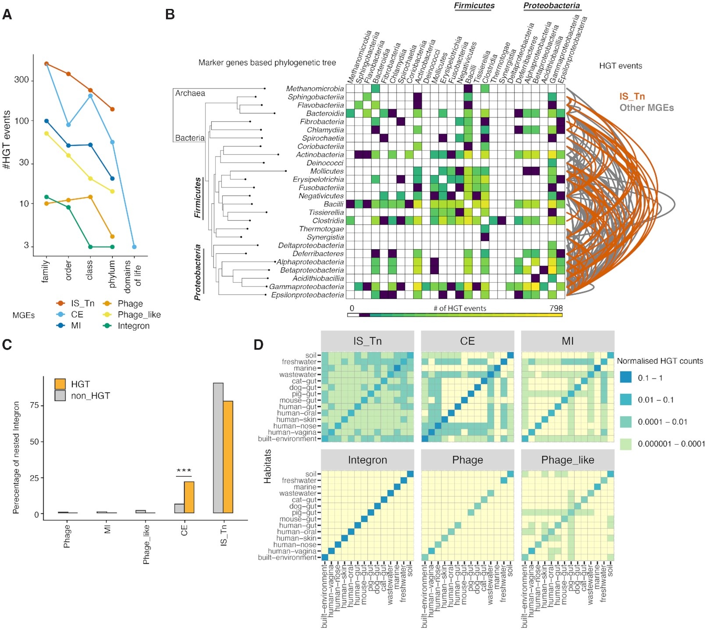
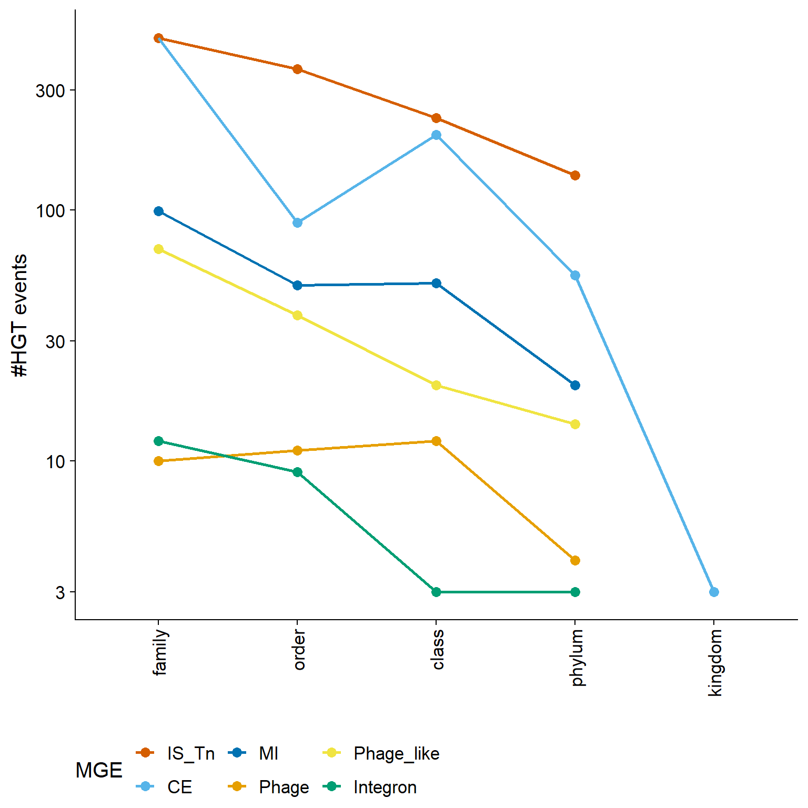
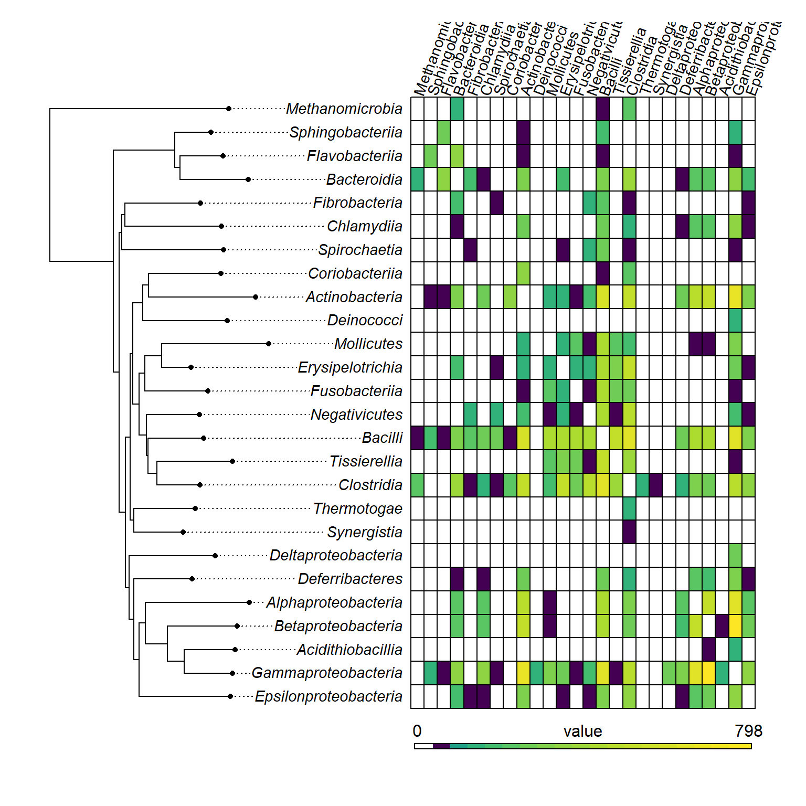

library(tidyverse)
library(cowplot)
library(reshape)
library(RColorBrewer)
library(phytools)
library(viridis)Figura 4
Transferencia Horizontal de Genes Mediado por MGEs (HGT)

- La ocurrencia de eventos recientes de HGT mediada por MGEs disminuye considerablemente con la distancia taxonómica.
- Resumen de los eventos de HGT mediada por MGEs a través de un árbol filogenético (basado en genes marcadores filogenéticos) de clases taxonómicas. El mapa de calor cuantifica los eventos de HGT (coloreados según la leyenda en la parte inferior) entre las clases taxonómicas y los arcos indican la contribución de los elementos transponibles (en rojo) sobre otras categorías de MGEs (en gris).
- Análisis de anidamiento de integrones con diferentes categorías de MGEs muestra su anidamiento significativo con CE-Elementos conjugativos (razón de probabilidades de Fisher 4.3, valor P = 2.9e−86) en el subconjunto de HGT en comparación con todas las ocurrencias anidadas.
- Mapas de calor que ilustran la transferencia horizontal promiscuosa de elementos transponibles a través de hábitats en comparación con otras categorías de MGEs. Todas las categorías de MGEs muestran una alta dinámica de MGE
PASO 1: Importar datos
data_mf <- read_tsv("data/raw_data/recombinase_hgt_cluster_master_file.txt.gz", col_names = F)
mge_bins <- read_tsv("data/raw_data/mge_bins_final.txt.gz",col_names = T)
tax <- read_tsv("data/raw_data/hgt_species.list.gz", col_names = F)
class_tree <- read.tree("data/raw_data/progenomes2_class_tree.nwk")
glist <- read_tsv("data/raw_data/genome_status_supplementary_tableS2.txt.gz", col_names = T)
# datos anotados sobre elementos genéticos móviles (MGE)
dat_mge <- read_tsv("data/processed_data/resolved_MGE_hgt_top_tax_final.txt.gz", col_names = F)
# recombinasas asociadas a distintos tipos de MGE
data_mge_class <- read_tsv("data/processed_data/resolved_MGE_hgt_class_level_final.txt.gz", col_names = F)
# Datos para la Figura 4C
datacl <- read_tsv("data/raw_data/all_recombinase_clusters_mge_resolved.txt.gz", col_names = F)Cargar paleta de colores
# Paleta general de colores
colc <- c("#D55E00", "#E69F00", "#F0E442", "#56B4E9", "#009E73", "#0072B2","#CECCCC")
names(colc) <- c("IS_Tn", "Phage", "Phage_like", "CE", "Integron", "MI", "Cellular") Preparación de variables para exportar datasets de conexiones (arcos) a iTOL
mges <- c("IS_Tn", "Phage", "Phage_like", "CE", "Integron", "MI")
colc_grey <- c("#D55E00", "#808080", "#808080", "#808080", "#808080", "#808080")
names(colc_grey) <- c("IS_Tn", "Phage", "Phage_like", "CE", "Integron", "MI")Cargar funciones
source("scripts/phylo_heatmap_function.R")PASO 2: Seleccion de genomas de alta calidad
# Obtener los genomas con la mas alta calidad
glist_high <- glist %>%
filter(genome_quality == "high")
# Cambio de formato y limpieza de datos
mge_bins_melted <- mge_bins %>%
select(1:6,9,10) %>%
# Reestructuramos el dataframe de formato ancho a largo
gather("mge","count",1:7) %>% # Convertimos las columnas 1 a 7 en dos columnas: 'mge' (nombre original de la columna) y 'count' (su valor)
filter(count > 0) %>%
mutate(island1 = island) %>%
separate(island1, c("g1","g2","g3")) %>% # Separamos 'island1' en tres componentes
# Unimos las dos primeras partes para crear un identificador único de genoma (e.g., "gen1.gen2")
mutate(genome = paste(g1, g2, sep = ".")) %>%
# Eliminamos las columnas auxiliares g1, g2 y g3
select(-g1,-g2,-g3) %>%
# Filtramos solo los genomas que están presentes en la lista `glist_high$genome`
filter(genome %in% glist_high$genome) %>%
select(-genome)Guardar datos
write.table(mge_bins_melted,file = "data/processed_data/mge_bins_final_collapsed.txt", sep = "\t", row.names = F, col.names = T, quote = F)PASO 3: Manipulación y Limpieza de los datos
# Renombramos las columnas de `data_mf` con nombres significativos
data_mf_rename <- data_mf %>%
dplyr::rename(rec_cluster = X1, prot = X2, specI = X3, kingdom = X4, phylum = X5, class = X6, order = X7, family = X8, genus = X9)
# Renombramos las columnas de `tax` para que tengan nombres descriptivos.
# Luego seleccionamos solo la columna 'genome' y filtramos los que están presentes en `glist_high`.
tax <- tax %>%
dplyr::rename(specI = X1, genome = X2, kingdom = X3, phylum = X4, class = X5, family = X6) %>%
select(genome) %>%
filter(genome %in% glist_high$genome)
# Renombramos las columnas para hacerlas más interpretables
data_mge_class_rename <- data_mge_class %>%
dplyr::rename(cor_mge = X1, island = X2, mge = X3, rec = X4, rec_cluster = X5, family = X6, class = X7, prot = X8)PASO 4: Asignar información taxonómica y filtrar genomas de interés
# Extraemos el ID del genoma a partir del identificador de proteína
# (se asume que 'prot' tiene formato como "X.Y.Z" donde X.Y es el ID de genoma)
datar_phy <- data_mf_rename %>%
mutate(prot1 = prot) %>%
separate(prot1, c("one","two","three"), sep = "\\.", extra = "merge") %>%
unite(.,genome, c("one","two"), sep = ".") %>%
select(-three) %>%
filter(genome %in% glist_high$genome)
## Unimos información taxonómica con los datos de proteínas ##
datar <- left_join(tax,datar_phy, by = "genome") %>%
drop_na() # eliminamos filas con valores NA después del joinPASO 5: Identificar HGT a cada nivel taxonómico
Filtramos los clusters de recombinación (rec_cluster) que contienen más de una entrada, y que tienen variación en el nivel taxonómico “family”.
Esto sugiere la presencia de transferencia horizontal entre diferentes familias.
datar_melt <- datar %>%
select(-genus) %>% # Eliminamos columna de genus (no se usa aquí)
group_by(rec_cluster) %>% # Agrupamos por cluster de recombinación
filter(n() > 1) %>% # Nos quedamos solo con clusters que tienen más de una entrada
filter_at(vars(family), any_vars(length(unique(.)) > 1)) %>% # Que haya al menos dos familias distintas
ungroup()
# Contamos el número de taxones distintos por nivel (kingdom a family) por cada cluster
datar_tax <- datar_melt %>%
group_by(rec_cluster) %>%
summarise_at(vars(kingdom:family), n_distinct) # Cuenta cuántos taxones distintos hay en cada nivel
# Preparamos un resumen del nivel taxonómico más alto en el que ocurre variación
datar_top <- datar_tax %>%
mutate_at(vars(kingdom:family), ~ . - 1) %>% # Restamos 1 (para que 0 indique sin variación)
mutate(cumul = rowSums(.[2:6])) %>% # Suma total de variación en niveles taxonómicos
pivot_longer(kingdom:family, names_to = "key", values_to = "value") %>% # Reorganiza a formato largo
group_by(rec_cluster) %>%
mutate(top_tax = key[which(value > 0)[1]]) %>% # Identifica el primer nivel donde hay variación
ungroup() %>%
pivot_wider(names_from = key, values_from = value) # Regresa a formato ancho
# Combinamos con información de proteínas para cada cluster
sub_datar <- datar %>% select(rec_cluster,prot)
combine_mge <- left_join(datar_top,sub_datar, by = "rec_cluster")Guardar datos
write.table(combine_mge,file= "data/processed_data/pre_MGE_top_tax_file_final.txt", sep = "\t", quote = F, col.names = T, row.names = F)PASO 6: Estratificación basada en MGEs de los clusters de recombinasas
Limpiamos y formateamos el archivo: - Quitamos el encabezado repetido - Renombramos columnas para claridad - Extraemos el nombre del genoma a partir del identificador de proteína - Filtramos los genomas de interés y descartamos islas no definidas
dat_mge_f <- dat_mge %>%
filter(!X5 == "rec_cluster") %>%
dplyr::rename(MGE = X1, ISLAND = X2, MGE_ND = X3, rec = X4, rec_cluster = X5, cumul = X6, top_tax = X7, kingdom = X8, phylum = X9, class = X10, order = X11, family = X12, prot = X13) %>%
mutate(prot1 = prot) %>%
separate(prot1, c("one","two","three"), sep = "\\.", extra = "merge") %>%
unite(.,genome, c("one","two"), sep = ".") %>%
select(-three) %>%
filter(genome %in% glist_high$genome) %>%
filter(ISLAND != "ISLAND_ND") # Excluye islas no definidasPreparamos una versión más restringida del conjunto de datos, conservando solo genomas que están también en datar.
dat_mge_pref <- dat_mge_f %>%
mutate(prot1 = prot) %>%
separate(prot1, c("one","two","three"), sep = "\\.", extra = "merge") %>%
unite(.,genome, c("one","two"), sep = ".") %>%
select(-three) %>%
filter(genome %in% datar$genome)
# Quitamos las columnas taxonómicas redundantes para fusionar luego con datos actualizados
dat_mge_f1 <- dat_mge_pref %>% select(-kingdom,-phylum,-class,-order,-family)
# Fusionamos los datos de MGE con la anotación taxonómica por proteína y cluster
# Luego, reorganizamos los datos en formato largo para obtener el valor en el nivel taxonómico más informativo
dat_with_tax <- left_join(dat_mge_f1,datar, by = c("rec_cluster","prot")) %>%
select(MGE, rec_cluster, top_tax,prot, kingdom:family) %>%
reshape2::melt(id = c("MGE", "rec_cluster", "top_tax","prot")) %>%
# Filtramos solo el nivel taxonómico que fue identificado como el más informativo
filter(variable == top_tax) PASO 7: Generación de datos para las figuras 4C y 5
# Fusionamos datos de recombinasas y MGEs con anotación taxonómica
# Luego transformamos a formato largo, conservando solo el nivel taxonómico más informativo
dat_with_tax2n <- left_join(dat_mge_f1,datar, by = c("rec_cluster","prot")) %>%
select(MGE, MGE_ND, ISLAND, rec_cluster, top_tax,prot, kingdom:family) %>%
reshape2::melt(id = c("MGE", "MGE_ND","rec_cluster", "ISLAND", "top_tax","prot")) %>%
filter(variable == top_tax) # Solo nos quedamos con la categoría taxonómica más relevante
# Preparamos subconjunto con información de familia para cada recombinasa
temp_datar <- datar %>% select(rec_cluster,prot,family)
# Añadimos la información de familia a los datos largos con MGEs
temp_data_with_tax2n <- left_join(dat_with_tax2n,temp_datar, by = c("rec_cluster","prot"))
# Filtramos clusters de recombinasas asociadas a MGEs móviles (excluyendo "Cellular" y "nested")
# Luego, identificamos clusters que presentan diversidad en el nivel taxonómico relevante
dat_with_tax3_testn <- temp_data_with_tax2n %>%
filter(MGE != "Cellular" & MGE != "nested") %>% # Nos centramos en MGEs no celulares
group_by(rec_cluster, MGE) %>% # Agrupamos por cluster y tipo de MGE
mutate(val = n_distinct(value) > 1) %>% # Evaluamos si hay más de un taxón distinto
filter(val == "TRUE") %>% # Conservamos solo aquellos con diversidad taxonómica
ungroup()Guardar datos.
# Guardar datos
write.table(dat_with_tax3_testn,file="processed_data/all_hgt_data_family_expanded_redundant_final.txt", sep = "\t", col.names = T, row.names = F, quote = F)PASO 8: Preparación de datos para cuantificar HGT según el tipo de MGE y el nivel taxonómico afectado
# Extraemos información relevante (cluster, proteína, familia) desde los datos anotados
temp_datar <- datar %>% select(rec_cluster,prot,family)
# Unimos esta información a los datos previos con anotación taxonómica
temp_data_with_tax <- left_join(dat_with_tax,temp_datar, by = c("rec_cluster","prot"))
# Filtramos MGEs móviles (excluyendo los de origen celular o sin clasificar),
# luego identificamos recombinasas que están distribuidas en más de un taxón distinto
dat_with_tax_mge <- temp_data_with_tax %>%
filter(MGE != "Cellular" & MGE != "nested") %>% # Solo MGEs móviles
group_by(rec_cluster, MGE) %>% # Agrupamos por cluster y tipo de MGE
mutate(val = n_distinct(value) > 1) %>% # Evaluamos si hay diversidad taxonómica
filter(val == "TRUE") %>% # Conservamos solo los casos con diversidad
summarise(top_tax_new = unique(top_tax)) %>% # Extraemos el nivel taxonómico más informativo
ungroup() %>%
group_by(MGE, top_tax_new) %>% # Agrupamos por tipo de MGE y nivel taxonómico
summarise(final = n()) %>% # Contamos número de clusters con diversidad
mutate(tot = sum(final)) %>% # Calculamos total por MGE
ungroup()
## Ajuste manual: Forzamos a que haya al menos 3 eventos a nivel de reino (kingdom)
## para reflejar transferencias entre arqueas y bacterias aunque sean pocas pero significativas
dat_with_tax_mge <- dat_with_tax_mge %>%
mutate(final = if_else(top_tax_new == "kingdom",3,as.numeric(final)))
# Ordenamos niveles de factores para visualización ordenada
dat_with_tax_mge$top_tax_new <- factor(dat_with_tax_mge$top_tax_new, levels = rev(c("kingdom","phylum","class","order","family")))
dat_with_tax_mge$MGE <- factor(dat_with_tax_mge$MGE,levels = c("IS_Tn","CE","MI","Phage","Phage_like","Integron"))Figure 4A - HGT line plot
Generamos un gráfico de línea con puntos para visualizar los eventos de HGT por nivel taxonómico (kingdom, phylum, etc.) estratificados por tipo de MGE.
mge_tax_log <- ggplot(dat_with_tax_mge, aes(x = top_tax_new, y = final, color = MGE)) +
geom_point(aes(group = MGE), size = 3) + # Puntos grandes para cada tipo de MGE
geom_line(aes(group = MGE), size = 1) + # Conectamos puntos con líneas para cada tipo de MGE
scale_colour_manual(values = colc) + # Usamos una paleta de colores personalizada
scale_y_log10() # Escala logarítmica para visualizar mejor las diferencias
# Personalizamos el gráfico con un tema limpio y rotación de etiquetas
mge_tax_log +
theme_cowplot(font_size = 15) + # Estilo claro y moderno
theme(legend.position = "bottom",
axis.text.x = element_text(angle = 90,hjust = 1,vjust = 0.5)) + # Rotamos etiquetas del eje X
labs(y = "#HGT events", x = "") # Etiquetas de los ejes
PASO 9: Generación de datos para las figuras 4B
# Preprocesamiento de la tabla con información de clases taxonómicas y MGEs
data_mge_class_phy <- data_mge_class_rename %>%
mutate(prot1 = prot) %>% # Guardamos la columna original de proteínas en una nueva columna
separate(prot1, c("one","two","three"), sep = "\\.", extra = "merge") %>%
unite(.,genome, c("one","two"), sep = ".") %>% # Reunimos los dos primeros fragmentos para identificar el genoma
select(-three) %>% # Eliminamos el componente restante de la separación
filter(genome %in% tax$genome) %>% # Filtramos solo los genomas presentes en la lista filtrada de taxonomía
filter(.,!grepl("Cellular",cor_mge)) # Excluimos elementos que no son MGEs móviles ("Cellular")
## Identificación de recombinasas compartidas entre genomas (potenciales eventos de HGT) ##
data_mge_class_hgt <- data_mge_class_phy %>%
group_by(rec_cluster) %>% # Agrupamos por clúster de recombinasa
summarise(count = n()) %>% # Contamos cuántos genomas comparten ese clúster
filter(., count > 1) # Nos quedamos solo con aquellos compartidos por más de un genoma (indicador de HGT)
# Filtramos la tabla original para quedarnos solo con los clústeres que muestran posible HGT
data_hgt <- left_join(data_mge_class_hgt, data_mge_class_phy, by = "rec_cluster")PASO 10: Contar combinaciones de familias por recombinasa
# Numero de cluster por recombinadas
pre_hgt <- data_hgt %>%
group_by(rec_cluster) %>%
summarise(family = paste(family, collapse = ":")) %>%
group_by(rec_cluster,family) %>%
summarise(count = n())
# Normalizar combinaciones de familias (A:B ≡ B:A)
pre_hgt_decoupled <- pre_hgt %>%
group_by(family) %>%
mutate(nfamily = duo_maker(family)) %>%
ungroup() %>%
separate_rows(nfamily, sep = ";") %>% group_by(rec_cluster,nfamily) %>% summarise(ncount = sum(count)) %>%
mutate(nfamily = map_chr(nfamily,~toString(sort(str_split(.x, ":")[[1]])))) %>%
group_by(nfamily, rec_cluster) %>%
summarise(final_count = sum(ncount)) %>%
ungroup() %>%
filter(.,!grepl("NA ",nfamily))
# Extrae las combinaciones únicas de familia y clase de los genomas involucrados en HGT
rel_family_class <- data_hgt %>%
select(family, class) %>%
unique(.) %>%
mutate(family1 = family, family2 = family) %>% # Duplica la columna 'family' para facilitar joins posteriores
select(-family) # Elimina la columna original 'family'
# Separa las combinaciones de familias (tipo "famA, famB") en dos columnas distintas
pre_hgt_decoupled_family <- pre_hgt_decoupled %>%
separate(nfamily, c("family1", "family2"), sep = ", ", extra = "merge")
# Asocia 'family1' con su clase taxonómica (class.x)
pre_hgt_class1 <- left_join(pre_hgt_decoupled_family, rel_family_class, by = "family1") %>%
select(-family1) %>% # Elimina columna original family1 tras el join
dplyr::rename(family2 = family2.x) # Renombra para mantener consistencia
# Asocia 'family2' con su clase taxonómica (class.y), filtra pares con clases distintas,
# agrupa por pares de clases y suma los eventos HGT
pre_hgt_class2 <- left_join(pre_hgt_class1, rel_family_class, by = "family2") %>%
select(-family2, -family2.y, -family1) %>% # Limpia columnas intermedias no necesarias
filter(., class.x != class.y) %>% # Conserva solo los pares donde hay diferencia de clase (potencial HGT entre clases)
group_by(class.x, class.y) %>%
summarise(hgt_count = sum(final_count)) %>%
# Combina las clases en un nombre de par (ej. "Gammaproteobacteria:Bacilli")
unite(name_new, class.x:class.y, sep = ":") %>%
# Ordena alfabéticamente las clases en cada par (para que "A:B" y "B:A" cuenten como uno solo)
mutate(name_new = map_chr(name_new, ~toString(sort(str_split(.x, ":")[[1]])))) %>%
# Agrupa por el par único ordenado y suma los eventos HGT redundantes
group_by(name_new) %>%
summarise(final_count = sum(hgt_count)) %>%
ungroup()
# Muestra el total de eventos HGT entre clases
pre_hgt_class2 %>% mutate(tot = sum(final_count)) %>% head() # Resultado esperado: 2823 eventos para genomas de alta calidad# A tibble: 6 × 3
name_new final_count tot
<chr> <int> <int>
1 Acidithiobacillia, Betaproteobacteria 1 2823
2 Acidithiobacillia, Gammaproteobacteria 2 2823
3 Actinobacteria, Alphaproteobacteria 49 2823
4 Actinobacteria, Bacilli 123 2823
5 Actinobacteria, Bacteroidia 8 2823
6 Actinobacteria, Betaproteobacteria 75 2823PASO 11: Cálculo de HGT basado en MGE para obtener arcos de mapas térmicos
# Procesa el archivo renombrado para extraer el genoma y filtrar MGEs válidos (excluye "Cellular" y "MGE_ND")
data_mge_class_phy_MGE <- data_mge_class_rename %>%
mutate(prot1 = prot) %>% # Crea una columna auxiliar para separar la proteína
separate(prot1, c("one", "two", "three"), sep = "\\.", extra = "merge") %>% # Separa ID de proteína por puntos
unite(., genome, c("one", "two"), sep = ".") %>% # Une las dos primeras partes como identificador del genoma
select(-three) %>% # Elimina el fragmento sobrante
filter(genome %in% tax$genome) %>% # Filtra por genomas de alta calidad definidos previamente
filter(!grepl("Cellular", cor_mge) & !grepl("MGE_ND", cor_mge)) # Excluye MGEs no definidos o de origen celular
# Identifica recombinasas asociadas a MGEs que están presentes en múltiples genomas → potencial HGT
data_mge_class_hgt_MGE <- data_mge_class_phy_MGE %>%
group_by(rec_cluster) %>%
summarise(count = n()) %>%
filter(count > 1) # Se quedan solo las recombinasas compartidas por más de un genoma
# Extrae los datos completos de esas recombinasas compartidas
data_hgt_MGE <- left_join(data_mge_class_hgt_MGE, data_mge_class_phy_MGE, by = "rec_cluster")
# Agrupa por recombinasa y MGE, colapsando las familias taxonómicas en texto separado por ":"
pre_hgt_MGE <- data_hgt %>%
group_by(rec_cluster, cor_mge) %>%
summarise(family = paste(family, collapse = ":")) %>%
group_by(rec_cluster, cor_mge, family) %>%
summarise(count = n()) # Cuenta cuántas veces se da esa combinación
# Descompone combinaciones de ≥3 familias en pares, elimina redundancias (A:B ≡ B:A)
pre_hgt_decoupled_MGE <- pre_hgt_MGE %>%
group_by(family) %>%
mutate(nfamily = duo_maker(family)) %>% # Aplica función para generar pares de familias
ungroup() %>%
separate_rows(nfamily, sep = ";") %>% # Separa cada par generado
group_by(cor_mge, nfamily) %>%
summarise(ncount = sum(count)) %>% # Suma ocurrencias por par y MGE
mutate(nfamily = map_chr(nfamily, ~toString(sort(str_split(.x, ":")[[1]])))) %>% # Ordena alfabéticamente para unificar A:B y B:A
group_by(nfamily, cor_mge) %>%
summarise(final_count = sum(ncount)) %>%
ungroup() %>%
filter(!grepl("NA ", nfamily)) # Elimina combinaciones que incluyan NA
head(pre_hgt_decoupled_MGE)# A tibble: 6 × 3
nfamily cor_mge final_count
<chr> <chr> <int>
1 Acetobacteraceae nested 1
2 Acetobacteraceae, Enterobacteriaceae IS_Tn 3
3 Acetobacteraceae, Lactobacillaceae Phage_like 1
4 Acetobacteraceae, Leuconostocaceae IS_Tn 1
5 Acetobacteraceae, Moraxellaceae IS_Tn 1
6 Acetobacteraceae, Pseudomonadaceae IS_Tn 1PASO 12: Cálculo de eventos de transferencia horizontal (HGT) mediados por MGE entre clases taxonómicas
# Crea una tabla única de relación entre familia y clase para asignar clases taxonómicas a pares de familias
rel_family_class_MGE <- data_hgt %>%
select(family, class) %>%
unique(.) %>%
mutate(family1 = family, family2 = family) %>% # Prepara columnas duplicadas para unir por ambos lados del par
select(-family)
# Separa las combinaciones de familias en pares individuales: columna "family1" y "family2"
pre_hgt_decoupled_family_MGE <- pre_hgt_decoupled_MGE %>%
separate(nfamily, c("family1", "family2"), sep = ", ", extra = "merge")
# Une cada "family1" con su clase correspondiente
pre_hgt_class1_MGE <- left_join(pre_hgt_decoupled_family_MGE, rel_family_class_MGE, by = "family1") %>%
select(-family1) %>%
dplyr::rename(family2 = family2.x) # Ajuste de nombres para evitar duplicados
# Une cada "family2" con su clase correspondiente, y filtra las que pertenecen a clases distintas
pre_hgt_class2_MGE <- left_join(pre_hgt_class1_MGE, rel_family_class_MGE, by = "family2") %>%
select(-family2, -family2.y, -family1) %>%
filter(class.x != class.y) %>% # Solo eventos entre clases diferentes
group_by(class.x, class.y, cor_mge) %>%
summarise(hgt_count = sum(final_count)) # Cuenta total de eventos entre cada par de clases por tipo de MGE
# Une los nombres de clase para formar un identificador de par, agrupa, y descompone combinaciones A:B y B:A
pre_hgt_decoupled_class_MGE <- pre_hgt_class2_MGE %>%
unite(new, class.x:class.y, sep = ":") %>% # Combina el nombre de ambas clases
group_by(new, cor_mge) %>%
mutate(name_new = duo_maker(new)) %>% # Genera pares únicos (A:B = B:A)
ungroup() %>%
separate_rows(name_new, sep = ";") %>% # Separa múltiples combinaciones si hay
group_by(name_new, cor_mge) %>%
summarize(hgt_count = sum(hgt_count)) %>% # Suma los eventos para cada combinación de clases por MGE
ungroup() %>%
mutate(name_new = map_chr(name_new, ~toString(sort(str_split(.x, ":")[[1]])))) %>% # Ordena los nombres de clase alfabéticamente
group_by(name_new, cor_mge) %>%
summarise(final_count = sum(hgt_count)) %>% # Suma eventos redundantes unificados
ungroup() %>%
separate(name_new, c("class.x", "class.y")) # Vuelve a separar en columnas para posterior análisis o visualización
head(pre_hgt_decoupled_class_MGE)# A tibble: 6 × 4
class.x class.y cor_mge final_count
<chr> <chr> <chr> <int>
1 Acidithiobacillia Gammaproteobacteria CE 2
2 Actinobacteria Alphaproteobacteria CE 1
3 Actinobacteria Alphaproteobacteria IS_Tn 18
4 Actinobacteria Alphaproteobacteria Integron 4
5 Actinobacteria Alphaproteobacteria Phage_like 26
6 Actinobacteria Bacilli CE 10PASO 13: Arcos HGT Figura 4B para iTOL
# Construcción de la tabla de clases HGT por MGE
class_tab <- pre_hgt_decoupled_class_MGE %>%
unite(new, class.x:class.y, sep = ":") %>%
group_by(new,cor_mge) %>%
mutate(name_new = duo_maker(new)) %>%
ungroup() %>%
separate_rows(name_new, sep = ";") %>%
group_by(name_new,cor_mge) %>%
summarize(hgt_count = sum(final_count)) %>%
select(name_new,cor_mge, hgt_count) %>%
ungroup() %>%
separate(name_new, c("class.x","class.y"))
# Cálculo del porcentaje de eventos HGT por categoría de MGE
class_tab %>%
group_by(cor_mge) %>%
summarise(f = sum(hgt_count)) %>%
mutate(frac = (f/sum(f))*100)# A tibble: 7 × 3
cor_mge f frac
<chr> <int> <dbl>
1 CE 523 21.9
2 IS_Tn 1218 50.9
3 Integron 97 4.05
4 MI 53 2.21
5 Phage 10 0.418
6 Phage_like 475 19.8
7 nested 17 0.710Descripción paso a paso:
Agrupa los datos por categoría MGE (
cor_mge).Suma el número total de eventos HGT (
hgt_count) por MGE (f).Calcula el porcentaje que representa cada MGE respecto al total de eventos
(frac).
# Resumen para gráficas
class_tab_plot <- class_tab %>%
group_by(cor_mge) %>%
summarise(count = sum(hgt_count)) Se crea un resumen del número total de eventos HGT (count) por cada categoría de MGE (cor_mge), útil para graficar.
Guardar archivos
# Asignación de ángulos personalizados para los arcos
angles <- seq(32,80,12)
# Generación de archivos para cada categoría de MGE
for(i in 1:length(mges)) {
separator <- c("DATASET_CONNECTION","SEPARATOR COMMA")
dataset_label <- paste0("DATASET_LABEL,",mges[i])
# Asignar un color a cada conjunto de datos, usando el valor correspondiente de 'colc'
dcolor <- paste0("COLOR,",colc_grey[mges[i]])
optional <- c("DRAW_ARROWS,0",paste0("CURVE_ANGLE,",angles[i]),"CENTER_CURVES,1","ALIGN_TO_LABELS,1")
# Descripción: Opciones adicionales de formato para iTOL:
# - DRAW_ARROWS,0: No dibujar flechas.
# - CURVE_ANGLE: Define el ángulo del arco.
# - CENTER_CURVES,1: Centra los arcos.
# - ALIGN_TO_LABELS,1: Alinea los extremos a las etiquetas del árbol.
data_lines <- c("DATA")
data_oi <- class_tab %>% filter(cor_mge==mges[i])
# Inicializar las líneas de salida con los parámetros de encabezado y configuración
out_lines <- c(separator, dataset_label, dcolor, optional, data_lines)
for(j in 1:nrow(data_oi)){
line_oi <- paste(data_oi[j,1],data_oi[j,2],"2",colc_grey[mges[i]],"normal",sep = ",")
# Añadir la línea de conexión a las líneas de salida
out_lines <- c(out_lines,line_oi)
}
# Guardar archivos - Salida de los archivos
writeLines(out_lines, paste0(mges[i],"_class_sub_grey_itol_connections_fig4B.txt"))
}PASO 14: Preparación de los datos para el gráfico de calor (heatmap) de HGT (Transferencia Horizontal de Genes)
# Separar la columna 'name_new' en dos nuevas columnas: 'class1' y 'class2'
hgt_class_level <- pre_hgt_class2 %>%
separate(name_new, into = c("class1", "class2"), sep = ", ")
# La función 'separate' divide la columna 'name_new' en dos nuevas columnas 'class1' y 'class2' usando la coma y el espacio como delimitador.
# Filtrar los datos para excluir filas con valores "NA" en las columnas 'class1', 'class2' y 'final_count'
hgt_class_level_spread <- hgt_class_level %>%
filter(!grepl("NA", class1)) %>% # Excluir filas donde 'class1' contiene "NA"
filter(!grepl("NA", class2)) %>% # Excluir filas donde 'class2' contiene "NA"
filter(!grepl("NA", final_count)) %>% # Excluir filas donde 'final_count' contiene "NA"
# Pivotar los datos para que 'class1' sea la columna identificadora y las combinaciones de 'class2' sean las nuevas columnas
pivot_wider(id_cols = class1, names_from = class2, values_from = final_count) %>%
# Convertir 'class1' en las filas del dataframe
column_to_rownames(var = "class1") %>%
# Reemplazar los valores NA por 0
replace(is.na(.), 0)
# Crear una lista con todas las clases únicas en 'class1' y 'class2'
allClasses <- unique(c(hgt_class_level$class1, hgt_class_level$class2))
# 'unique' se usa para obtener las clases únicas en ambas columnas, 'class1' y 'class2'
# Eliminar cualquier "NA" de la lista de clases
allClasses <- allClasses[!grepl("NA", allClasses)]
# Mantener solo las clases presentes en el árbol filogenético 'class_tree'
class_tree_rooted <- keep.tip(class_tree, as.vector(allClasses))
# 'keep.tip' selecciona solo los elementos de 'class_tree' que están en la lista 'allClasses'Guadar archivo de filogenia
write.tree(class_tree_rooted,file="data/processed_data/hgt_tree.nwk")Figura 4B: Matriz Simétrica para Visualización de HGT en un Árbol Filogenético
Crear una nueva matriz con ceros, donde las filas y las columnas son las etiquetas de las puntas del árbol filogenético ‘class_tree_rooted’
# Nueva matriz
new_matrix <- matrix(0, nrow = Ntip(class_tree_rooted), ncol = Ntip(class_tree_rooted),
dimnames = list(class_tree_rooted$tip.label, rev(class_tree_rooted$tip.label)))
# 'Ntip(class_tree_rooted)' devuelve el número de puntas (tips) en el árbol filogenético 'class_tree_rooted'
# La matriz tiene el mismo número de filas y columnas, con las etiquetas de las puntas en ambas dimensiones.
# 'rev' invierte el orden de las etiquetas de las puntas para las columnas.
# Bucle para iterar sobre cada fila (i) y columna (j) de la matriz de datos 'hgt_class_level_spread'
for(i in rownames(hgt_class_level_spread )) {
for(j in colnames(hgt_class_level_spread )) {
# Obtener el valor de 'final_count' en la intersección de la fila 'i' y la columna 'j'
value <- hgt_class_level_spread[i,j]
# Si el valor es mayor que 0, actualizar la matriz nueva
if(value > 0) {
new_matrix[i,j] <- (value) # Asignar el valor en la posición (i, j)
new_matrix[j,i] <- (value) # Asignar el mismo valor en la posición (j, i) (simetría)
}
}
}
# Establecer un pequeño valor para mejorar la visualización en el gráfico de calor
small_value <- unique(sort(unlist(new_matrix)))[2]
# 'unlist' convierte la matriz en un vector, 'sort' ordena los valores, 'unique' elimina duplicados
# El segundo valor más pequeño se asigna a 'small_value' para usarlo como referencia visual en el gráfico.
small_value <- small_value - small_value %% 0.001
# Ajustar 'small_value' a un valor redondeado a tres decimales (eliminando el residuo de la división por 0.001)
# Esto es útil para establecer un umbral mínimo visual en el gráfico.
# Definir los puntos de corte (breaks) para el gráfico de calor
heatmap_breaks <- c(0, small_value, lseq(1, max(new_matrix), length.out = 18))
# El primer valor es 0, el segundo es 'small_value' (valor pequeño para mejorar la visualización),
# y el tercero es una secuencia logarítmica entre 1 y el valor máximo de 'new_matrix', dividida en 18 puntos.
# Definir la paleta de colores para el gráfico de calor
plot_colors <- c("white", colorRampPalette((viridis(10)), bias = 5)(length(heatmap_breaks) - 2))
# 'viridis(10)' genera una paleta de 10 colores usando la paleta 'viridis'.
# 'colorRampPalette' expande esta paleta según la longitud de 'heatmap_breaks' menos 2 (porque ya se definen 0 y 'small_value').
# 'bias = 5' ajusta la distribución de los colores, dándole más énfasis a los valores más altos.Visualizacion grafica
phylo.heatmap.orient(class_tree_rooted,
new_matrix, fsize = c(0.9, 0.9, 1),
colors = plot_colors, grid = T, split = c(0.6, 0.4), breaks = heatmap_breaks, lwd = 1)
Puedes encontrar el script completo en Figura4_modificado.R.